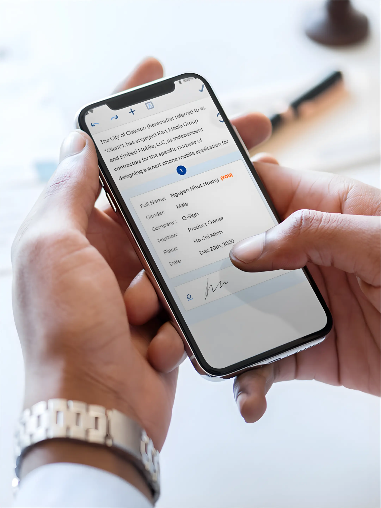
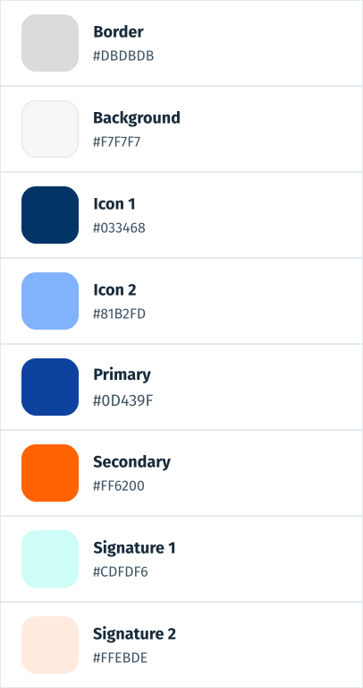

Q-Sign
Q-sign: A digital solution that transform the traditional signature

Q-sign's objectives
When building Q-Sign, our aim is to revolutionize the traditional method of signing documents, particularly in contract signings. Here are the main features
- Compose or upload documents with e-signature capability
- Address booking functionality
What I did in this project
MY ROLE AND DURATION
- UI/UX designer
- Development of the landing page using WordPress
- The project lasted 4 months
- Three parts: web app, mobile app and landing page
The Problem
Manual signing is time-consuming
Small and medium businesses waste significant time on manual document signing processes. Teams need to print documents multiple times, physically travel to collect signatures, manually track signature status, and store paper documents for compliance.
"We spend more time chasing signatures than actually working on the contracts."
Operations Manager at a legal services firm
Discovery and Initial Research
Market Analysis
Existing Solutions
Major e-signature platforms like DocuSign and Adobe Sign dominate the market but have limitations:
- Enterprise-focused pricing ($25 to $40 per user per month)
- Complex features overwhelming for small businesses
- Steep learning curve for non-technical users
User Needs
Our research identified key requirements:
- Simple, intuitive interface
- Mobile-first approach for on-the-go signing
- Affordable pricing for small teams
- Quick setup without technical knowledge
Critical Discovery
During deeper market research, we discovered significant legal and regulatory constraints around e-signature validity that vary by jurisdiction. The legal framework for digital signatures requires compliance with specific standards and, in some markets, certification from approved authorities.
Impact: These regulatory requirements meant our initial B2C approach would face substantial legal and compliance barriers. We needed to reconsider our go-to-market strategy.
User Personas
Sarah, Office Manager
Age: 32 | Company: Marketing Agency (50 employees)
Role: Manages contracts and client agreements
Pain Points
- Spends 10+ hours per week tracking signature status
- Clients often delay signing, slowing project starts
- Paper document storage is disorganized and costly
- No visibility into document workflow status
Goals
- Reduce signature turnaround time from days to hours
- Eliminate paper document storage
- Track document status in real-time
- Streamline client communication
"I need a solution that works on mobile because my clients are always on the go."
David, Small Business Owner
Age: 45 | Company: Import/Export Business (8 employees)
Role: Runs daily operations and manages contracts
Pain Points
- Cannot afford expensive enterprise e-signature tools
- Needs simple solution without technical complexity
- Limited IT support for troubleshooting
- Requires quick setup without training
Goals
- Affordable pricing that fits small business budget
- Easy to use without IT support
- Fast document signing with suppliers and clients
- Reliable and secure platform
"DocuSign costs more than my monthly office rent. I need something simple and affordable."
Q-sign’s objectives
When building Q-Sign, our aim is to revolutionize the traditional method of signing documents, particularly in contract signings. Here are the main features
- Compose or upload documents with e-signature capability
- Address booking functionality
What I did in this project
MY ROLE AND DURATION
- UI/UX designer
- Development of the landing page using WordPress
- The project lasted 4 months
- Three parts: web app, mobile app and landing page
Result
The current situation of Q-Sign is that it was initially developed as an MVP (Minimum Viable Product) and attracted interest from investment capital, Do Venture. However, regrettably, the final deal did not materialize.
Prototype
Helps everyone imagination
The prototype serves as a tool to help everyone visualize how Q-Sign works. The Q-Sign mobile and web applications were built specifically to shed light on the operation of the product for product owners, stakeholders, developers, and designers alike.
Click on the desktop screen to interact with the prototype
Click on the mobile screen to interact with the prototype
Usability Testing
Testing Methodology
Participants: 8 users (4 office managers, 4 small business owners)
Tasks:
- Upload a document and request a signature
- Sign a document as a recipient
- Track signature status
87.5%
Task completion rate
2.3 min
Average time to upload and request signature
62.5%
Struggled with verification step
Key Findings
What Worked Well
- Upload flow: Users found the drag-and-drop interface intuitive
- Mobile design: All users successfully completed tasks on mobile
- Simple interface: Users appreciated the clean and straightforward design
Pain Points
- Email verification: 5 out of 8 users confused by the verification email step
- Signature placement: Users wanted to drag-and-drop signature fields instead of clicking coordinates
- Status tracking: Not clear which documents were pending vs completed
Next iteration: Simplify verification flow, add drag-and-drop for signature placement, improve status indicators
Competitor Analysis
I conducted a rapid competitor analysis to assess the strengths and weaknesses of existing e-signature products in the market. Using this information, we aimed to identify opportunities for Q-Sign, whether in terms of direction, features, or target market.
Our competitors

Strengths
- Market leader in E-signature technology
- Diverse range of solutions
- Strong brand equity
- Strong financial performance
- Extensive dealer network and associates network
Weaknesses
- Dependence on third-party software and platform
- Faces privacy and security concerns
- Different regulations and cultural differences
- Competes with numerous e-signature management companies
Opportunities
- Local collaboration
- Lowering of the cost of new product launches
- Trend of customers migrating to higher end products
Threats
- Competitive pressures
- Trade relation between US and other countries
- Lack of localization
- Government trade law obstacle
Summary
Based on the weaknesses and threats identified in the SWOT analysis of competitors, the team decided to develop the e-signature product with the following key features and strategies
- Encryption of e-signatures and uploaded documents to ensure privacy and security.
- Identification of countries where governments have regulations supporting e-signatures.
- Targeting regions with tech-savvy users, rapid social media growth, and robust 5G networks
- Localization of document templates to cater to specific regional and cultural needs.
How Q-sign operate
Why I have to draw the user flow?
- It helps product owners and stakeholders understand all user steps in Q-Sign.
- It ensures designers connect features seamlessly, guaranteeing a smooth user journey.

Document image capture
Before taking a picture, users must sign in or sign up. Then, they can either:
- Go to Camera to take a photo of documents.
- Scan a QR code to add friends or open a document.

Create a blank document or upload one
- From the document screen, the owner generates a blank document and composes it using a WYSIWYG editor.
- The owner adds necessary information such as name, title, and signature box.
- The owner invites the receiver via email.
- The receiver reads the document and adds comments if necessary.
- Finally, both parties sign the document.

Communicate with others
- Chat screen > Create new chat > browse on address book
- Or, on Chat screen > Add friend > Scan QR code or send request via email.
Style Guide
Better communication
A style guide aids in designer-to-developer handoff by facilitating smooth communication between the two parties.


Takeaway
If I were a founder, after realizing there was a legal constraint on e-signatures, where the application was made, I would reconsider the business model to ensure regulatory compliance and market viability. Additionally, I would focus on developing only one platform, either web or mobile, to save time and budget.